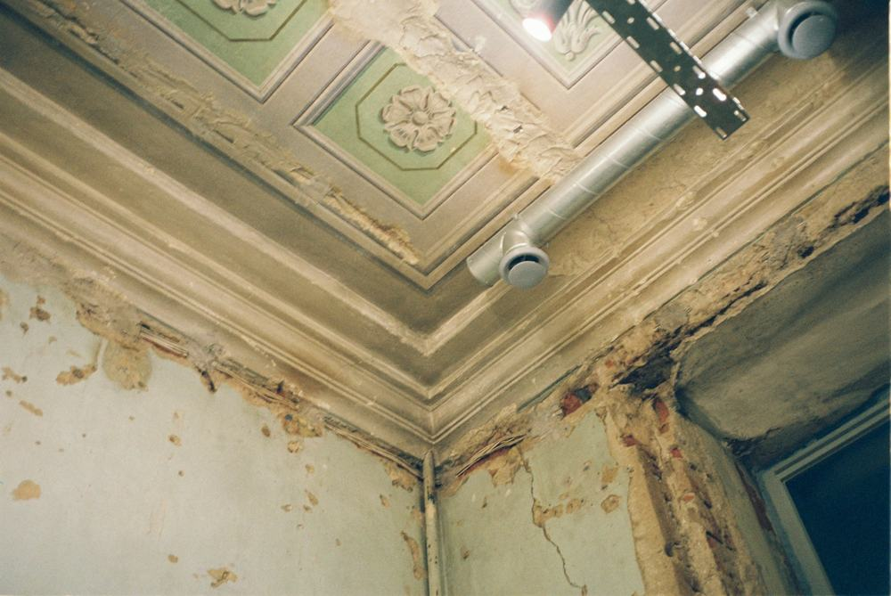

Engenharia diagnóstica
Laudos técnicos que explicam a causa, não só o sintoma.
Vistoria, laudo e perícia de trincas, infiltrações, corrosão e outras manifestações patológicas em edificações. Trabalho conduzido e assinado por engenheiras civis e arquiteta.
- ABNT NBR 16747Inspeção predial
- ABNT NBR 13752Perícias de engenharia
- ART / RRTEm todo laudo emitido
- 2 dias úteisPara enviar a proposta
Atendemos
- Condomínios e síndicos
- Construtoras e incorporadoras
- Advogados e seguradoras
- Proprietários e compradores
O escritório
Rigor técnico na investigação, clareza na hora de explicar.
A Fidelix & Cavalcante é um escritório de engenharia diagnóstica. Investigamos a origem das manifestações patológicas em edificações e entregamos um parecer que orienta a decisão: o que está acontecendo, qual o risco e o que fazer primeiro.
Cada laudo segue as normas técnicas aplicáveis e é escrito para ser entendido por quem vai usá-lo, seja um síndico, um advogado ou o dono do imóvel.
- Engenharia civil e arquitetura
- 3 sócias
- Responsabilidade técnica
- ART/RRT
- Entrega do laudo
- Até 7 dias úteis
Serviços
Do diagnóstico à solução, com responsabilidade técnica
Cada serviço termina num documento objetivo, com fotos, medições e recomendações que servem de base para decisões e orçamentos de obra.
-
01
Vistoria e diagnóstico
Inspeção no local com registro fotográfico, medições e mapeamento das manifestações patológicas.
-
02
Laudo técnico
Causa provável, grau de risco e recomendações de reparo, assinado por profissional habilitada.
-
03
Perícia
Análise técnica para disputas com construtora, vizinhança, seguradora ou condomínio.
-

04Acompanhamento do reparo
Conferimos se a solução executada trata a causa, não só o sintoma.
Patologias
Cada sintoma tem uma causa. Nosso trabalho é encontrá-la.
Investigamos as manifestações mais comuns em edificações residenciais, comerciais e condominiais.
- Trincas e fissurasMovimentação, recalque ou sobrecarga
- Infiltração e umidadeFachadas, lajes, subsolos e banheiros
- EflorescênciaDepósitos de sal na alvenaria
- Corrosão de armaduraConcreto estufado ou desplacado
- Destacamento de revestimentoCerâmicas, pastilhas e reboco
- Recalque de fundaçãoAfundamento e esquadrias desalinhadas
- Deformação de lajeFlechas excessivas e fissuras no teto
- Bolor e mofoCondensação e ventilação deficiente
Fissura, trinca ou rachadura?
A abertura ajuda a classificar. Arraste para ver.
Classificação usual, só para ilustrar. Cada caso exige vistoria.
Como trabalhamos
Um processo claro, do pedido ao laudo no seu portal
- 01
Pedido e proposta
Você descreve o problema e envia fotos. Respondemos com escopo, prazo e valor.
- 02
Vistoria técnica
Uma profissional vai ao imóvel, registra, mede e mapeia cada manifestação.
- 03
Análise e laudo
Investigamos as causas e emitimos o laudo com ART/RRT, disponível no seu portal.
- 04
Acompanhamento
Se quiser, acompanhamos o reparo até a solução estar concluída.
O que você recebe
Um laudo que você entende e consegue usar
Escrevemos para quem vai tomar a decisão. O documento mostra o que está acontecendo, o quanto é grave e por onde começar.
- Causa provável de cada manifestação, não só a descrição.
- Grau de gravidade para priorizar o que tratar primeiro.
- Fotos e medições de cada ponto, com a localização.
- Recomendações de reparo que servem de base para o orçamento da obra.
Equipe
Quem assina o seu laudo
Profissionais habilitadas, com registro ativo no conselho de classe e responsabilidade técnica sobre cada documento emitido.
-
Nome da sócia
Engenheira civil, especialista em patologia das construções
CREA nº 000000 -
Nome da sócia
Engenheira civil
CREA nº 000000 -
Nome da sócia
Arquiteta
CAU nº 000000
Notou uma trinca, mancha ou infiltração? Fale com uma engenheira antes de contratar o reparo.
Solicitar orçamentoContato
Conte o que está acontecendo no seu imóvel
Quanto mais detalhes, mais precisa a proposta. Respondemos em até 2 dias úteis.
- Telefone e WhatsApp(48) 90000-0000
- E-mailcontato@exemplo.com.br
- HorárioSegunda a sexta, das 8h às 18h
- AtendimentoFlorianópolis e região metropolitana